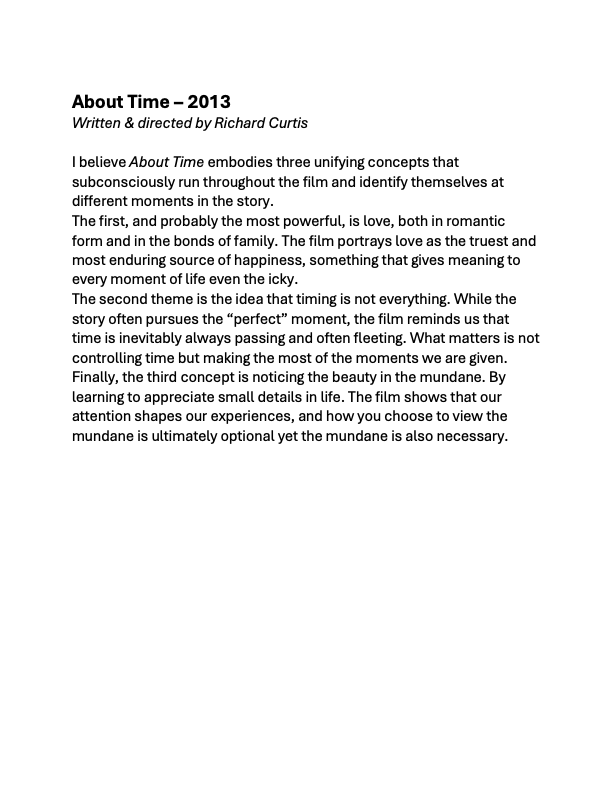

Kaelan
Carlson
Productions
Photography
Videography
Writing
Digital Art
Music
About
Contact
03 / Writing
Scripts, journals, and long-form thought.
Screenplays
Screenplay
Jony's Journey to the Crystal of Eternal Life
Journals
Journal
Beyond Your Comfort Zone
Journal
Identifying Potential Barriers
Think Pieces
Storytelling
Comedy Loses Integrity

Screenplay
About Time
History
An Art Form
Media
Impact of Media
History
A Trip to the Moon
History
Good Will Hunting Summary